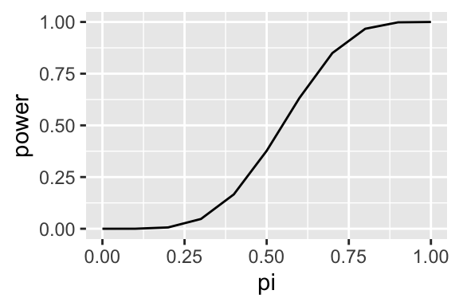
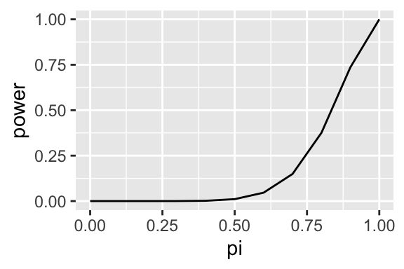

4.2 Test Statistics
Suppose a random sample \(X\) from \(f(x; \theta)\) (a pmf or pdf that with parameter \(\theta\)). Let \(T = r(X)\) and reject the null hypothesis if \(T \in R\). The \(T\) is a test statistic and R is the rejection region of the test.
4.2.1 Power Function
The power function of a hypothesis test is the probability that the researcher rejects the hypothesis given the true parameter. Formally, we write $() = (T R ) = ( H_0 ) $.
Notice that we want the power function to be one (or as close as possible) for values of \(\theta\) that are consistent with the null hypothesis. Conversely, we want the power function to be zero (or as close as possible) for values of \(\theta\) that are inconsistent with the null hypothesis.
To see the power function in action, suppose you suspect that I might be a cheater and using a coin biased toward heads in a game of chance. I hand over my coin. You plan to toss it 10 times and to reject the fair-coin hypothesis (and call me a cheater) if you see at least 6 heads in 10 tosses. Then the power function of of the test is \(\Pr(\text{more than 6 heads in 10 tosses} \mid \pi)\).
pi <- seq(0, 1, length.out = 11)
power <- 1 - pbinom(5, size = 10, prob = pi)
data <- data.frame(pi, power)
kableExtra::kable(data, digits = 2)| pi | power |
|---|---|
| 0.0 | 0.00 |
| 0.1 | 0.00 |
| 0.2 | 0.01 |
| 0.3 | 0.05 |
| 0.4 | 0.17 |
| 0.5 | 0.38 |
| 0.6 | 0.63 |
| 0.7 | 0.85 |
| 0.8 | 0.97 |
| 0.9 | 1.00 |
| 1.0 | 1.00 |
library(ggplot2)
ggplot(data, aes(x = pi, y = power)) +
geom_line()
This power function shows that when my coin is fair (\(\pi = 0.5\)), the probability that you will reject that hypothesis and call me a cheater is about 0.38–that seems way to high.
So you might choose to call me a cheater only if 9 or more of the 10 tosses are heads. Here’s that power function:
power <- 1 - pbinom(8, size = 10, prob = pi)
data <- data.frame(pi, power)
kableExtra::kable(data, digits = 2)| pi | power |
|---|---|
| 0.0 | 0.00 |
| 0.1 | 0.00 |
| 0.2 | 0.00 |
| 0.3 | 0.00 |
| 0.4 | 0.00 |
| 0.5 | 0.01 |
| 0.6 | 0.05 |
| 0.7 | 0.15 |
| 0.8 | 0.38 |
| 0.9 | 0.74 |
| 1.0 | 1.00 |
ggplot(data, aes(x = pi, y = power)) +
geom_line()
That looks a bit better–there’s only about a 1% chance that you’ll call me a cheater. But there’s another problem… even if my coin has a substantial bias toward heads, say \(\pi = 0.5\), there’s only a 5% chance that you’ll (correctly) call me a cheater.
This highlights a trade-off between the two types of errors. As you design a test to make fewer Type I errors (incorrect rejection), it will make more Type II errors (lost opportunity). As you design a test to make fewer Type II errors, it will make more Type I errors.
But because of the conclusions we draw, the errors are not equivalent. A Type I error (incorrect rejection) is a more costly mistake than a Type II error (lost opportunity).
Because of the asymmetry in cost, we design tests to control the Type I error rate. Then, once we’ve controlled the Type I error rate to an acceptably low level, we minimize the Type II error rate as much as we can.
We say that a test has size \(\alpha\) if \(\text{sup}_{\theta \in \Theta_0} \beta(\theta) = \alpha\). That is, the Type I error rate is at most \(\alpha\) across all values of \(\theta\) consistent with the null hypothesis.
Similarly, we say that a test has level \(\alpha\) if \(\text{sup}_{\theta \in \Theta_0} \beta(\theta) \leq \alpha\). Notice the inequality. That is, the Type I error rate never exceeds (but doesn’t necessarily reach) \(\alpha\) across the values of \(\theta\) consistent with the null hypothesis. In some cases, we cannot construct a size \(\alpha\) test, so we instead really on the less precise idea of a “level.”
The key idea is this: We choose the size/level of the test so that the decision to reject the null hypothesis is convincing. It’s a bit of a logical leap, but this is the idea: We would rarely observe data more unusual than this if the null hypothesis were true, therefore we conclude that the null hypothesis is false.
By convention, we use size-0.05 tests in political science. Occasionally, we use 0.01 or 0.10, but 0.05 is the overwhelming standard.
4.2.2 The Likelihood Ratio Test
Recall that for a random sample \(X = \{x_1, ..., x_n\}\), the likelihood function is \(L(\theta) = \prod_{i = 1}^n f(x_i \mid \theta)\).
The likelihood ratio (LR) test statistic for \(H_0 : \theta \in \Theta_0\) is \(\lambda_{LR} = \dfrac{\text{sup}_{\Theta_0} L(\theta)}{\text{sup}_{\Theta} L(\theta)}\).
It’s helpful to think of \(\text{sup}_{\Theta} L(\theta)\) as the largest likelihood across the entire parameter space \(\Theta\). If we let \(\hat{\theta}^{ML}\) represent our usual ML estimate, then \(\text{sup}_{\Theta} L(\theta) = L(\hat{\theta}^{ML})\).
On the other hand, \(\text{sup}_{\Theta_0} L(\theta)\) is the largest likelihood across the portion of the parameter space consistent with the null hypothesis. We are still looking for the value that maximizes the likelihood of the observed data, but we are maximizing across the space consistent with the null hypothesis (not the entire parameter space).
The likelihood ratio (LR) test has rejection region defined by \(\lambda_{LR} \leq c\) for \(c \in [0, 1]\).
If the likelihood of the data is much larger without the restriction in effect, then it’s intuitive that the data are inconsistent with the null hypothesis.
But how can we choose \(c\) to achieve a size-\(\alpha\) or size-0.05 test?
It turns out that transforming \(\lambda_{LR}\) slightly helps us here. Define \(\lambda^*_{LR} = -2 \log \lambda_{LR}\). (Authors inconsistently refer to \(\lambda_{LR}\) and \(\lambda^*_{LR}\) as “the likelihood ratio”). Notice that \(\lambda_{LR}\) and \(\lambda^*_{LR}\) have an inverse relationship; smaller values of \(\lambda_{LR}\) are inconsistent with the null hypothesis, but larger values of \(\lambda^*_{LR}\) are inconsistent with the null hypothesis. Now we’ll reject the null hypothesis if \(\lambda^*_{LR} \geq c^*\) (where \(c^* = -2 \log c\)).
To make the LR test a size-\(\alpha\) test, we need to choose rejection threshold \(c^*\) so that \(\text{sup}_{\theta \in \Theta_0} \Pr(\lambda^*_{LR} \leq c^*) = \alpha\).
To establish this, we need to understand the distribution of \(\lambda^*_{LR}\) under repeated sampling. Fortunately, there’s a very general result for this.
Suppose the researcher has a point null hypothesis \(H_0: \theta = \theta_0\), then under certain (but not harsh) regularity conditions, \(-2 \log \lambda_{LR} \xrightarrow{d} \chi^2_1\). That is, the distribution of \(\lambda^*_{LR}\) converges to the Chi-squared distribution with one degree of freedom.
Suppose we used \(\lambda^*_{LR} \geq 2\) as the rejection region, then we can compute the chance of an incorrect rejection if the null hypothesis were indeed true as \(\int_2^\infty f_{\chi^2_1}(x \mid \theta = \theta_0) dx\) or 1 - pchisq(2, df = 1).
1 - pchisq(2, df = 1)## [1] 0.1572992We can see that rejecting if \(\lambda^*_{LR} \geq 2\) would make the error rate too high–we want 5%.
We can use the inverse cdf function in R to find the threshold that would make the rejection rate 5% under the null hypothesis.
qchisq(0.95, df = 1)## [1] 3.841459That’s the the test: reject the null hypothesis that \(\theta = \theta_0\) if \(\lambda^*_{LR} \geq 3.84\).
4.2.3 Wald Test
Suppose that the researcher has a point null hypothesis \(H_0: \theta = \theta_0\), an estimate \(\hat{\theta}\) of \(\theta\), and an estimate of the standard deviation of the estimate \(\widehat{\text{SD}}(\hat{\theta})\). Then the Wald test statistic has the form \(W = \dfrac{\hat{\theta} - \theta_0}{\widehat{\text{SD}}(\hat{\theta})}\).
Notice that as \(\hat{\theta}\) gets further from the hypothesized value (relative to the \(\widehat{\text{SD}}(\hat{\theta})\)), the test statistic \(W\) grows in magnitude. Thus, we might use the reject the null hypothesis if \(|W| > c\) for \(c \geq 0\).
4.2.3.1 Example: Biased Coin
I claim that my coin is fair; but you suspect I am a cheater. You want to test the null hypothesis that my coin is fair.
So we toss my coin 10 times and obtain six heads. Treating the tosses as a independent Bernoulli random variables with parameter \(\pi\), we have a \(\hat{\pi}^{ML} = \frac{3}{5}\), so that \(\text{sup}_{\Theta} L(\theta) = L \left( \frac{3}{5} \right) = \left( \frac{3}{5} \right)^6 \times \left(\frac{2}{5} \right)^4 \approx 0.001194394\). On the other hand, \(\text{sup}_{\Theta_0} L(\theta) = L \left( \frac{1}{2} \right) = \left(\frac{1}{2} \right)^{10} \approx 0.0009765625\). (Because the null hypothesis is a point null, the sup portion of the numerator degenerates.) The we have \(\lambda_{LR} = \dfrac{\text{sup}_{\Theta_0} L(\theta)}{\text{sup}_{\Theta} L(\theta)} = \dfrac{0.0009765625}{0.001194394} \approx 0.817622\). This means that the likelihood of the data under the null hypothesis is about 82% of the unrestricted likelihood.
It’s a bit unclear at the moment what to make of \(\lambda_{LR} \approx 0.82\). Should you reject the null hypothesis and call me a cheater. At the moment, an arbitrary threshold is fine. We might choose \(c = 0.9\) and reject the the null hypothesis.
But is that a good test? Before we can discuss whether that’s a good test, we need to cover a few more ideas.